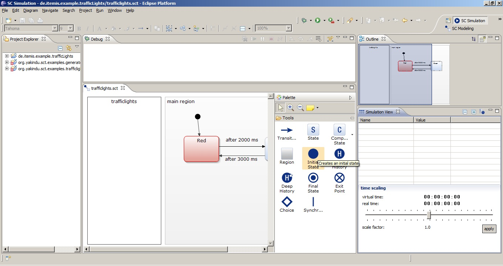

The Yakindu Statechart Tools 2 are built upon Java and Xtext. So you need to have installed a Java Runtime Environment and Xtext installed. The easier way to get this is to install the pre configured Xtext contribution.
The Yakindu Statechart Tools 2 need Eclipse Indigo 3.7 or higher and Xtext 2.0.1 exactly (no higher) to work correctly.
You install the Yakindu Plug-Ins from the update site: http://updates.yakindu.com/indigo/milestones.
The Xtext integration utilities provide Xtext functionality for Yakindu. Additionally to the base integration also GMF and JFace integration is provided here. For more details check the parts XGI and XJI.
Under Yakindu SCT 2 you can select what code generators you need and if you need the Yakindu SCT2 SDK (for developers). For users only the Yakindu SCT 2 is sufficient.
For state machine modeling purposes open the Yakindu SC Modeling perspective by choosing Window - Open Perspective - SC Modeling. This perspective is optimized for statechart modeling. It consists of

To simulate a state machine use the Yakindu SC Simulation perspective by choosing Window - Open Perspective - SC Simulation. This perspective is optimized for simulation purposes and consists of:

In the context of model driven software development generators play an important role. The generator transforms the model to either another model or text like code. Yakindu generators can be written in different languages. One is Xpand. By choosing File - New - Other... - YAKINDU Xpand Generator Project you create a project optimized for writing a generator in Xpand. For more details regarding Xpand see Xpand Documentation.

All you need to do is to give it a speaking name and click Finish. The setting Configure for Plugin Export is an option for plugin developers and can be neglected here.
<!--TODO possible Problem. if not choosing plugin project the manifest is ignored and the build path has to be adjusted. Otherwise the resulting Main.xpt has errors. -->
The newly created project already has a package with an Xpand starting point: the Main.xpt. In this file the needed metamodels are already included. It contains the entrance Xpand statement that iterates all states in the model and prints the names in a first text file.
The generator that transforms the state machine model into code or documentation can be written in Xtend2 and Java. Find a detailed description on Xtend2 in the Xtend2 documentation. Yakindu comes with a predefined project setting for such projects. To create such a project choose File - New - Other... - YAKINDU Xtend2/Java Generator Project.
!images/new_java_xtend_project!X
Give the project a speaking full qualified name and name also the generator java class with a full qualified name. If you also want to use Xtend activate the checkbox Use Xtend.